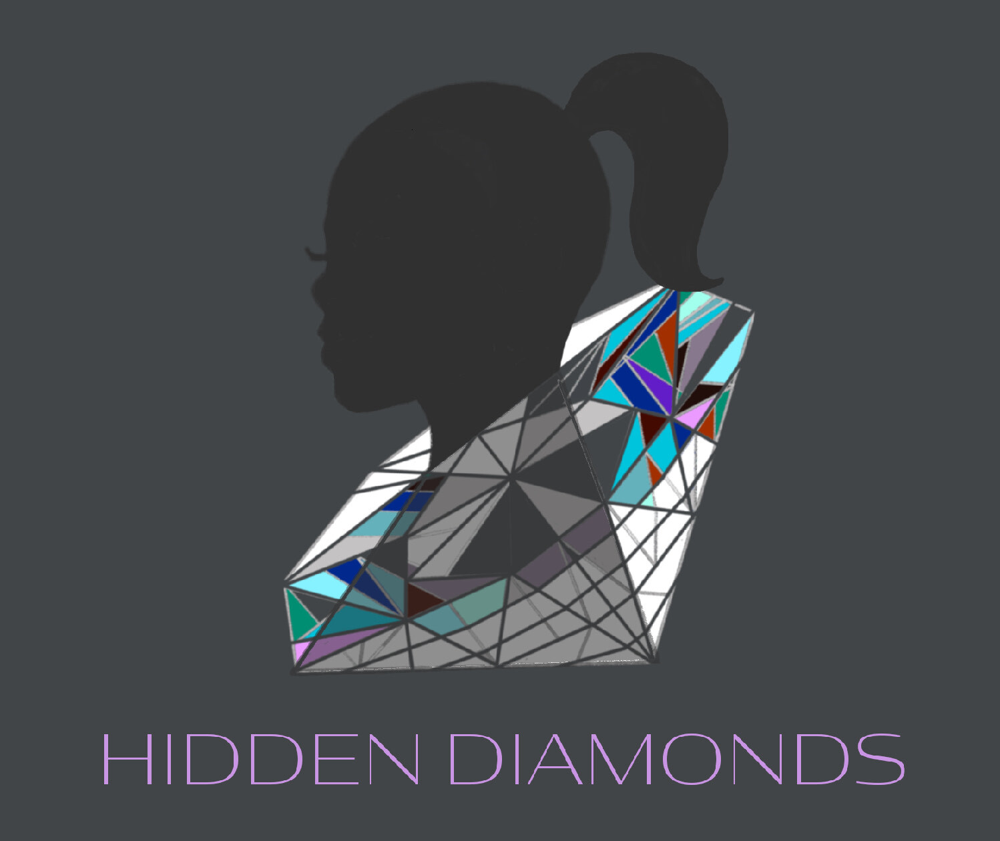

Hidden Diamonds
A virtual mentoring program
Mission Statement: Restoring hope and equipping young girls with tools to create a new future.
Vision Statement: is to reduce recidivism & provide young females with mentors to empower, equip & elevate them into their desired future.
Objective: creating a community that fosters self-worth, provides support & skills that lead to a bright & hopeful future.
Target Population:
Young females, ages 12 – 22
- Core A (12-14 ages)
- Core B (15-18 ages)
- Core C (19-22 ages)
Program Length: 12 months with weekly check-ins with mentee/mentor